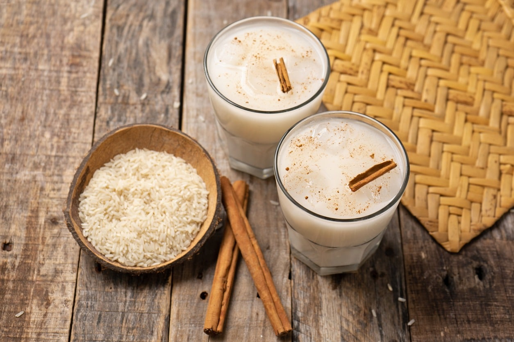

Horchata

Horchata is a traditional Mexican drink made with rice and cinnamon
As popular as Horchata is in Mexico, it actually has its origin in Valencia, Spain. However, Spanish Horchata and Mexican Horchata are not the same, since Spanish Horchata uses tiger nut as its base, while Mexican Horchata uses rice as base. Though not the same, both are sweet drinks flavored with cinnamon.
Horchata has extended through multiple countries and regions. In Mexico, not only every family and restaurant has its own recipe, but there are some varieties that uses almond milk or coconut water. However, every Horchata recipe has rice and cinnamon as its main ingredients.
Ingredients
- 2 cups uncooked long grain white rice
- 1 cinnamon stick
- 4 cups hot water
- 8 cups extra water
- ¾ cup white sugar
- 2 teaspoons vanilla extract
- 1 cup milk
Steps
- Put the rice and cinnamon stick in a bowl. Add hot water and let it soak overnight, or for about 8 hours.
- The next day, pour the bowl (water, rice, and cinnamon) into a blender, and blend until smooth.
- Strain the mixture through a strainer or a sieve. Stir to help the liquid go through. Discard the solids, and repeat if necessary.
- Add milk, vanilla extract, and the rest of the water to the mixture. Stir the sugar, adjusting the amount until it fit your taste.
- Don't forget to taste the drink before adding more sugar, and if you feel that the consistency is too dense, add more water.
- Let the drink chill in the fridge. Before serving, don't forget to stir, since the rice mixture tends to settle at the bottom.
- Serve on glasses with ice cubes. You can decorate them with a cinnamon stick, and sprinkle with a pinch of grounded cinnamon on top.